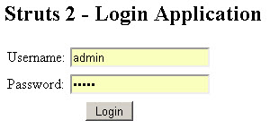
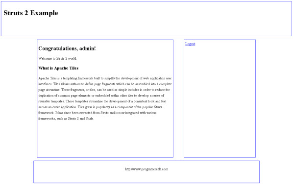
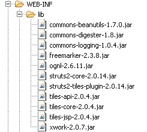
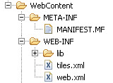
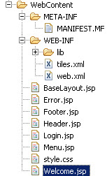
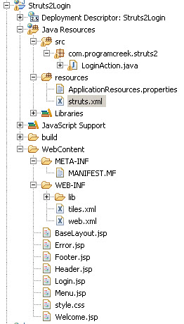
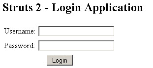

Struts 2 Tutorial Series – How to insert Tiles to your project
This tutorial is based on Struts 2 Tutorial Series - Login application.
1. What is Tiles?
Apache Tiles is a templating framework built to simplify the development of web application user interfaces. Tiles allows you to define page fragments which can be assembled into a complete page at runtime. See the snapshot below.
2. Goal of this application
We will add Tiles to our Login application. After a user login,

a well-formatted page will displays like this. You can download the code
here.

3. Tools and libraries required
This application is based on the login application, it use the same environment.
1. JDK 1.5 or above
2. Tomcat 6.0
3. Eclipse IDE for Java EE Developers
4. Struts 2.0.14 (link). JAR files required for this application. Download Link 1.
Download link 2(permanent on hotfile.com)
5. Libraries used.

4. Getting Started
This is based on our Login application. If you haven't walk through it, you can do it now. Or you can also get the required file by going back to the tutorial or downloading this package.
5. Configuring Tiles in web.xml
To configure Tiles, an entry for listener has to be made in web.xml. Open the web.xml from WEB-INF folder and add following code into it.
web.xml
<listener> <listener-class>org.apache.struts2.tiles.StrutsTilesListener</listener-class> </listener> <context-param> <param-name>tilesDefinitions</param-name> <param-value>/WEB-INF/tiles.xml</param-value> </context-param> |
Here is the finally code.
web.xml
<?xml version="1.0" encoding="UTF-8"?> <web-app xmlns:xsi="http://www.w3.org/2001/XMLSchema-instance" xmlns="http://java.sun.com/xml/ns/javaee" xmlns:web="http://java.sun.com/xml/ns/javaee/web-app_2_5.xsd" xsi:schemaLocation="http://java.sun.com/xml/ns/javaee http://java.sun.com/xml/ns/javaee/web-app_2_5.xsd" id="WebApp_ID" version="2.5"> <display-name>Struts2 Login</display-name> <listener> <listener-class>org.apache.struts2.tiles.StrutsTilesListener</listener-class> </listener> <context-param> <param-name>tilesDefinitions</param-name> <param-value>/WEB-INF/tiles.xml</param-value> </context-param> <filter> <filter-name>struts2</filter-name> <filter-class>org.apache.struts2.dispatcher.FilterDispatcher</filter-class> </filter> <filter-mapping> <filter-name>struts2</filter-name> <url-pattern>/*</url-pattern> </filter-mapping> <welcome-file-list> <welcome-file>Login.jsp</welcome-file> </welcome-file-list> </web-app> |
6. Configuring tiles.xml file
Create a file tiles.xml in WEB-INF folder and copy following code into it.

tiles.xml
<?xml version="1.0" encoding="UTF-8" ?> <!DOCTYPE tiles-definitions PUBLIC "-//Apache Software Foundation//DTD Tiles Configuration 2.0//EN" "http://tiles.apache.org/dtds/tiles-config_2_0.dtd"> <tiles-definitions> <definition name="baseLayout" template="/BaseLayout.jsp"> <put-attribute name="title" value="" /> <put-attribute name="header" value="/Header.jsp" /> <put-attribute name="menu" value="/Menu.jsp" /> <put-attribute name="body" value="" /> <put-attribute name="footer" value="/Footer.jsp" /> </definition> <definition name="/welcome.tiles" extends="baseLayout"> <put-attribute name="title" value="Welcome page" /> <put-attribute name="body" value="/Welcome.jsp" /> </definition> <definition name="/error.tiles" extends="baseLayout"> <put-attribute name="title" value="Error page" /> <put-attribute name="body" value="/Error.jsp" /> </definition> </tiles-definitions> |
In the tiles.xml file, we have define a baseLayout using template BaseLayout.jsp. This layout contains attributes such as header, title, body, menu and footer. The layout is then extended and new definitions for Welcome page and Error page is defined. When We override the base layout, only those changed attribute will be change to be different with base layout. All other attribute remains the same with base layout.
7. Struts.xml file and LoginAction Class
To demonstrate tiles, we add a logout function to LoginAction class.
LoginAction.java
package com.programcreek.struts2; import com.opensymphony.xwork2.ActionSupport; public class LoginAction extends ActionSupport{ private String username; private String password; public String authenticate() { if (this.username.equals("admin") && this.password.equals("admin")) { return "success"; } else { addActionError(getText("error.login")); return "error"; } } public String logout() { return "logout"; } public String getUsername() { return username; } public void setUsername(String username) { this.username = username; } public String getPassword() { return password; } public void setPassword(String password) { this.password = password; } } |
In struts.xml file, we add
struts.xml
<?xml version="1.0" encoding="UTF-8" ?> <!DOCTYPE struts PUBLIC "-//Apache Software Foundation//DTD Struts Configuration 2.0//EN" "http://struts.apache.org/dtds/struts-2.0.dtd"> <struts> <constant name="struts.enable.DynamicMethodInvocation" value="false" /> <constant name="struts.devMode" value="false" /> <constant name="struts.custom.i18n.resources" value="ApplicationResources" /> <package name="default" extends="struts-default" namespace="/"> <result-types> <result-type name="tiles" class="org.apache.struts2.views.tiles.TilesResult" /> </result-types> <action name="login" method="authenticate" class="com.programcreek.struts2.LoginAction"> <result name="success" type="tiles">/welcome.tiles</result> <result name="error" type="tiles">/error.tiles</result> </action> <action name="logout" method="logout" class="com.programcreek.struts2.LoginAction"> <result name="logout">/Login.jsp</result> </action> </package> </struts> |
8. Creating JSP files
Here is all JSP files.

BaseLayout.jsp
<%@ taglib uri="http://tiles.apache.org/tags-tiles" prefix="tiles"%> <!DOCTYPE HTML PUBLIC "-//W3C//DTD HTML 4.01 Transitional//EN" "http://www.w3.org/TR/html4/loose.dtd"> <html> <head> <meta http-equiv="Content-Type" content="text/html; charset=UTF-8"> <title><tiles:insertAttribute name="title" ignore="true" /></title> <link rel="stylesheet" type="text/css" media="all" href="style.css" /> </head> <body id="home"> <div id="header"> <tiles:insertAttribute name="header" /> </div> <div id="wrap"> <div id="content"> <tiles:insertAttribute name="body" /> </div> <div id="sidebar"> <tiles:insertAttribute name="menu" /> </div> <div id="footer"> <tiles:insertAttribute name="footer" /> </div> </div> </body> </html> |
Error.jsp
error page. |
Footer.jsp
<%@ page contentType="text/html; charset=UTF-8"%> <%@ taglib prefix="s" uri="/struts-tags"%> http://www.programcreek.com |
Header.jsp
<%@ page contentType="text/html; charset=UTF-8"%> <%@ taglib prefix="s" uri="/struts-tags"%> <h1>Struts 2 Example</h1> |
Login.jsp
<%@ page contentType="text/html; charset=UTF-8"%> <%@ taglib prefix="s" uri="/struts-tags"%> <html> <head> <title>Struts 2 - Login Application</title> </head> <body> <h2>Struts 2 - Login Application</h2> <s:actionerror /> <s:form action="login.action" method="post"> <s:textfield name="username" key="label.username" size="20" /> <s:password name="password" key="label.password" size="20" /> <s:submit method="execute" key="label.login" align="center" /> </s:form> </body> </html> |
Menu.jsp
<%@ page contentType="text/html; charset=UTF-8"%>
<%@ taglib prefix="s" uri="/struts-tags"%>
<s:url id="testUrlId" namespace="/" action="logout">
</s:url>
<s:a errorText="Sorry your request had an error."
href="%{testUrlId}">
Logout
</s:a> |
Here, be careful about how to define a link to trigger an action.
Welcome.jsp
<%@ page contentType="text/html; charset=UTF-8"%> <%@ taglib prefix="s" uri="/struts-tags"%> <html> <head> <title>Welcome Page - Struts 2 - Login Application</title> </head> <body> <h2>Congratulations, <s:property value="username" />!</h2> Welcome to Struts 2 world. <h3>What is Apache Tiles</h3> Apache Tiles is a templating framework built to simplify the development of web application user interfaces. Tiles allows authors to define page fragments which can be assembled into a complete page at runtime. These fragments, or tiles, can be used as simple includes in order to reduce the duplication of common page elements or embedded within other tiles to develop a series of reusable templates. These templates streamline the development of a consistent look and feel across an entire application. Tiles grew in popularity as a component of the popular Struts framework. It has since been extracted from Struts and is now integrated with various frameworks, such as Struts 2 and Shale. </body> </html> |
style.css
@CHARSET "ISO-8859-1"; #header { border:1px solid blue; background-position:50% 0; background-repeat:repeat no-repeat; height:130px; padding: 10px; } #wrap { background-color:white; margin-bottom:0; margin-left:auto; margin-right:auto; margin-top:0; overflow-x:hidden; overflow-y:hidden; padding-left:10px; padding-right:10px; position:relative; width:980px; } #content { display:inline; float:left; font-size:100%; line-height:1.6em; margin:15px; padding:5px; text-align:left; width:580px; border:1px solid blue; min-height: 500px; } #sidebar { display:inline; float:right; line-height:1.5em; margin:15px; padding:5px; width:300px; border:1px solid blue; min-height: 500px; } #footer { border:1px solid blue; background-position:50% 100%; background-repeat:repeat no-repeat; clear:both; height:60px; margin-bottom:0; margin-left:auto; margin-right:auto; margin-top:0; padding-bottom:10px; padding-top:25px; text-align:center; width:980px; } |
style.css is used for styling the layout.
9. We are done now
The file structure should look like this.

10. Run application
Login page

Welcome page
References: Servlet filters and Event Listeners
<pre><code> String foo = "bar"; </code></pre>
-
Alex
-
Munish
-
Sunil
-
Ravikumar
-
swathi
-
Kitchenaid Pasta Maker Attachment
-
Access Healthcare
-
Mens silver bracelets
-
Poster
-
writers job
-
STONEIda
-
wow gold